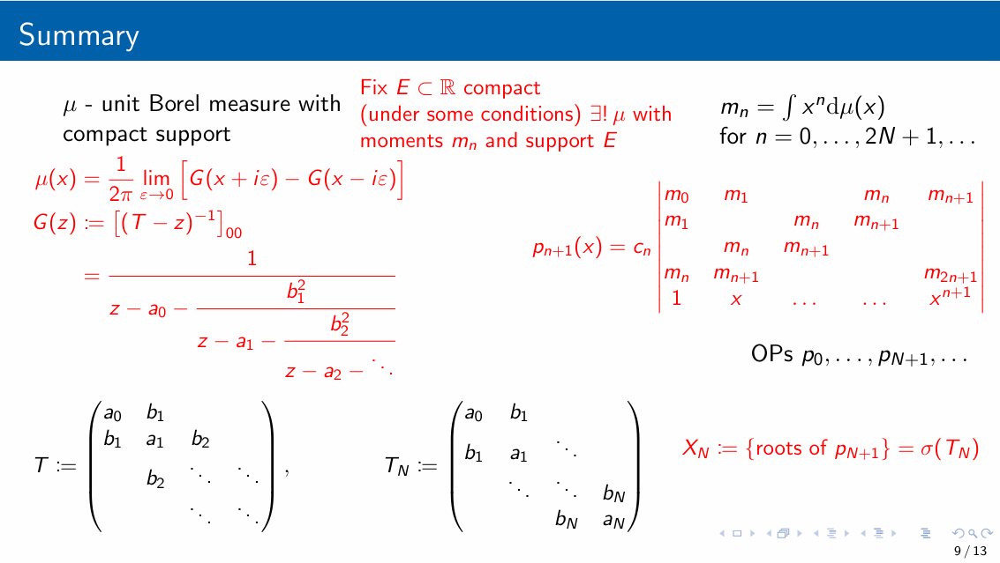

References
- Bond-order potentials (BOP): Drautz (2020), FINNIS (2007), Horsfield et al. (1996), Pettifor (1989)
- Numerical BOP: Haydock et al. (1972), Peiponen and Vaittinen (1982), Zheludeva et al. (1985), Luchini and Nex (1987)
- Kernel polynomial method: MAIOLI et al. (1994),
- Quadrature-based methods: Nex (1978), Tang et al. (2013), Nagler et al. (1984)
- Maximal entropy method: Glanville et al. (1988), Mead and Papanicolaou (1984)
(also see Thomas et al. (2022) (section 4.3 and Appendices D, E, F))
TO-DO: understand:
- Chin et al. (2010): Exact mapping between system-reservoir quantum models and semi-infinite discrete chains using orthogonal polynomials
- Woods et al. (2014): Mappings of open quantum systems onto chain representations and Markovian embeddings
- Saberi et al. (2008) Matrix product state comparison of the numerical RG and the variational formulation of the DMRG
Orthogonal polynomials
We have some measure \(\mu\) and we want to consider sequences of orthogonal polynomials: \(P_n \in \mathcal P_n\) (polynomials of degree \(\leq n\)) such that \(\mathrm{deg} P_n = n\) and
\[ \begin{align} (P_n, P_m) := \int P_n(x) P_m(x) \mathrm{d}\mu(x) = 0 \nonumber \end{align} \]
for all \(n\not=m\).
We have a choice of normalisation:
- Orthonormal polynomials: \((P_n, P_m) = \delta_{mn}\),
- Monic orthogonal: \(P_n = x^n + ...\),
- e.g., \(P_n(1) = 1\),
- ….
Example 1 (Classical orthogonal polynomials) Suppose \(\mathrm{d}\mu(x) = w(x) \mathrm{d}x\):
- Jacobi: \(w(x) = (1-x)^\alpha (1+x)^\beta\) on \([-1,1]\),
- Gegenbauer: Jacobi with \(\alpha=\beta\),
- Legendre: \(w(x) = 1\) on \([-1,1]\) (Jacobi and Gegenbauer with \(\alpha=\beta=0\)),
- Chebyshev: Jabobi with \(\alpha = \beta = -\frac{1}{2}\) (first kind), \(\alpha=\beta=+\frac12\) (second kind),
- Hermite: \(w(x) = e^{-x^2}\) on \(\mathbb R\),
- Laguerre: \(w(x) = x^\alpha e^{-x}\) on \([0,\infty)\).
Why?
- The above polynomials appear all over the place,
- Gauss quadradure (uses the zeros of orthogonal polynomials to approximate integrals),
- Approximation theory,
- …..
Example 2 (Spectral measures) For \(A\) bounded self-adjoint operator, there exists a unique spectral measure \(\mu_i\) such that
\[ \begin{align} f(A)_{ii} = \int f(x) \mathrm{d}\mu_i(x). \end{align} \]
When \(A\) is a matrix, with eigenpairs \((\lambda_j, v_j)\), then \(\mu_i = \sum_j |[v_j]_i|^2 \delta_{\lambda_j}\).
When \(A\) is e.g. a tight binding Hamiltonian, the corresponding spectral measure \(\mu_i\) is a local density of states (LDOS). We can use orthogonal polynomials (and the corresponding Jacobi operator) to approximate the LDOS.
Jacobi operators
Question: How to generate the sequence of orthogonal polynomials?
Answer: Lanczos-type recursion (it turns out that orthogonal polynomials satisfy a three-term recursion relation).
Example 3 (Chebyshev polynomials) For example, we have Chebyshev polynomials of the first kind satisfy \(T_0(x) = 1\), \(T_1(x) = x\), and
\[ \begin{align} T_{n+1} = 2x T_n(x) - T_{n-1}(x) \end{align} \]
(Chebyshev II have the same recursion but with \(U_0 = 1, U_1 = 2x\).)
For simplicity, let’s suppose that \(\mu(\mathbb R) = 1\) and generate the sequence of orthonormal polynomials. We first define \(P_0(x) = 1\) and \(b_1 P_1(x) = x - a_0\). For \(P_1\) to be orthogonal to \(P_0\), we require \(a_0 = \int x \mathrm{d}\mu\) and we choose \(b_1\) so that \(\int P_1^2 \,\, \mathrm{d}\mu = 1\). Then, supposing we have \(a_1,b_1, \dots, a_n,b_n\), then we define
\[ \begin{align} &b_{n+1} P_{n+1}(x) := (x-a_n) P_n(x) - b_n P_{n-1}(x) \qquad \text{with} \nonumber\\ % &\int P_{n+1}(x)^2 \mathrm{d}\mu(x) = 1 \quad \text{and} \quad % a_{n+1} := \int x P_{n+1}(x)^2 \mathrm{d}\mu(x) \end{align} \]
Lemma 1 This recursion generates the sequence of orthonormal polynomials.
Proof. By the choice of \(a_0\) we have \((P_0, P_1) = 0\) and, by the choice of \(b_1\), we have \((P_1,P_1)=1\). We assume that \(P_0,\dots,P_n\) are orthonormal with respect to \(\mu\), and note that
\[ \begin{align} b_1 &= b_1 \int P_1(x)^2 \mathrm{d}\mu \nonumber\\ % &= \int (x-a_0) P_1(x) \mathrm{d}\mu = \int xP_0(x) P_1(x) \mathrm{d}\mu \end{align} \]
and
\[ \begin{align} b_n &= b_n \int P_n(x)^2 \mathrm{d}\mu \nonumber\\ % &= \int \left( (x-a_{n-1}) P_{n-1} - b_{n-1} P_{n-2}\right) P_{n}\,\, \mathrm{d}\mu \nonumber\\ % &= \int x P_{n-1} P_{n}\,\, \mathrm{d}\mu \end{align} \]
for all \(n\geq 2\).
Finally, we conclude by noting that, for \(j \leq n\), we have
\[ \begin{align} b_{n+1} \int & P_{n+1}(x) P_j(x) \mathrm{d}\mu \nonumber\\ % &= \int \left( (x-a_n) P_{n} - b_{n} P_{n-1} \right) P_j\mathrm{d}\mu \nonumber\\ % &= \int \left( (x-a_n) P_{n}P_j - b_{n} P_{n-1}P_j \right) \mathrm{d}\mu \nonumber\\ % &= \begin{cases} 0 &\text{if } j \leq n-2 \nonumber\\ \int x P_{n}P_{n-1} \mathrm{d}\mu - b_{n} &\text{if } j=n-1 \nonumber\\ % \int x P_{n}(x)^2 \mathrm{d}\mu - a_n &\text{if } j=n \end{cases} \nonumber\\ % &= 0. \end{align} \]
Notice that, by the proof of Lemma 1, we also have the following Jacobi operator:
\[ \begin{align} T &:= \left( \int x P_n P_m \,\,\mathrm{d}\mu\right)_{mn} % \nonumber\\ % &= \begin{pmatrix} a_0 & b_1 & & & & \\ b_1 & a_1 & b_2 & & & \\ & b_2 & \ddots & \ddots & & \\ & & \ddots & a_n & b_{n+1} \\ & & & b_{n+1} & a_{n+1} & \ddots \\ & & & & \ddots & \ddots \end{pmatrix} \end{align} \]
It turns out that \((T^k)_{nm} = \int P_n x^k P_m \,\,\mathrm{d}\mu\) and so \((T^k)_{00} = \int x^k \mathrm{d}\mu\). In other words \(\mu\) is the spectral measure of \(T\) corresponding to the \(0\)-entry.
Remark. If \(\mu\) is the spectral measure of some Hamiltonian \(H\), then we have transformed a complicated geometry to a simple semi-infinite linear chain (with complicated coefficients).
We can approximate \(\mu\) with the spectral measure corresponding to a truncated version of \(T\)….
Measures, moments, OPs, and Jacobi operators

BOP
See Appendix E of Thomas et al. (2022).
Gauss quadrature
See Appendix D of Thomas et al. (2022) for proofs of the lemmas.
Let \(P_{n}\) be orthogonal polynomials with respect to \(\mu\) and let \(X_n = \{x_0,\dots,x_n\}\) be the set of zeros of \(P_{n+1}\). (One can show that \(X_N := \sigma(T_N)\) where \(T_n\) is the trucation of the Jacobi operator \(T\) i.e. \(T_n := (T_{ij})_{i,j=0}^n\)).
Gauss quadrature \(=\) integrate the polynomial interpolation of \(f\) on \(X_n\):
\[ \begin{align} \mathcal I f := \int f \,\, \mathrm{d}\mu \approx % \mathcal I_n f := \int I_nf \,\, \mathrm{d}\mu % \end{align} \]
where \(I_n f\) is the polynomial interpolation of \(f\) on \(X_n\).
Lemma 2 \(X_n\) is a set of \(n+1\) distinct points. There exists weights \(w_j\geq 0\) such that \(\sum_{j=0}^n w_j = \mu(\mathbb R)\) and \(\mathcal I_nf = \sum_{j=0}^n w_j f(x_j)\).
Lemma 3 Gaussian quadrature is exact for all polynomials of degree \(\leq 2n+1\): for \(p\in \mathcal P_{2n+1}\)
\[ \begin{align} \mathcal I_n p = \mathcal I p \end{align} \]
Proof. Write \(p(x) = P_{n+1}(x) q(x) + r(x)\) where \(q, r \in \mathcal P_n\). Notice that \(p(x_j) = P_{n+1}(x_j) q(x_j) + r(x_j) = r(x_j)\). Therefore, we have
\[ \begin{align} \mathcal Ip &= \int \big( P_{n+1} q + r \big) \mathrm{d}\mu \nonumber\\ % &= \int r \,\,\mathrm{d}\mu % \tag{orthogonality} \nonumber\\ % &= \int I_n r \,\, \mathrm{d}\mu % % \tag{$r = I_n r, r \in \mathcal P_n, |X_n| = n+1$} \nonumber\\ % &= \sum_{j=0}^n w_j r(x_j) % = \sum_{j=0}^n w_j p(x_j) \nonumber\\ % &= \mathcal I_n p \end{align} \]
Lemma 3 leads to the following error bound for Gaussian quadrature:
\[ \begin{align} \left| \mathcal If - \mathcal I_nf \right| % &= \left| \int f \mathrm{d}\mu - \sum_{j=0}^{n} w_j f(x_j) \right| \nonumber\\ % &= \inf_{p\in\mathcal P_{2n+1}} \left| \int (f-p) \mathrm{d}\mu - \sum_{j=0}^{n} w_j (f-p)(x_j) \right| \nonumber\\ % &\leq 2 \mu(\mathbb R) \inf_{p\in\mathcal P_{2n+1}} \| f - p \|_{L^\infty(\mathrm{supp} \mu \cup \{x_j\})} \end{align} \]